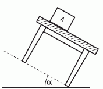

NO ME SALEN
PROBLEMAS RESUELTOS DE FÍSICA DEL CBC
Rozamiento
|
|

|
2.2.b- Se deja sólo el bloque A en reposo sobre la
mesa, y se la inclina lentamente.
Hallar el máximo
valor del ángulo
que podrá formar con la
horizontal, sin que A comience
a moverse.
Si habiendo fijado
ese ángulo se rompe el
equilibrio, hallar con
qué aceleración descenderá el bloque.
|
|  |
Este ejercicio viene enganchado con una parte anterior. No dejes de hacerla. Pero la cuestión es que ahora tenemos dos datos que el enunciado no brinda, pero los obtuvimos en la parte anterior: μe = 0,6 y μd = 0,2.
Pero tiene en común con la parte anterior que se pasa igualmente por la misma situación límite (L). |
|
|
En esta parte no hay balde, pero hay una fuerza de tracción que va creciendo y al mismo tiempo crece la fuerza de rozamiento. Hagamos los DCL (obligación para todo ejercicio de dinámica) y te va a quedar más claro. |
|
|
 |
Espero que estemos de acuerdo. Sobre el bloque A operan tres fuerzas: su peso, PA, el apoyo sobre la mesa, N, la fuerza de rozamiento que impide que deslice, Roz.
Fijate cómo elegí -apropiadamente- un sistema de referencia (con esta elección el ejercicio es más sencillo; con cualquier otra, el ejercicio igualmente debe salir).
Hice un segundo DCL con la fuerza PA descompuesta en las direcciones del sistema de referencia. (Te recomiendo hacr siempre dos DCLs para estos casos: el primero con las fuerzas reales, las interacciones; el segundo con las descomposiciones de fuerzas que fueran necesarias).
En todos los ejercicios de dinámica pasa lo mismo: después de realizar los DCL, tenés que escribir las ecuaciones de Newton: |
|
|
|
Empecemos con el bloque.
ΣFx = mA ax → PAx — Roz = mA ax
ΣFy = mA ay → N — PAy = 0
No es necesario que te explique por qué no hay aceleración en el eje y. Tampoco te tengo que explicar, a esta altura del partido, que:
PAx = PA . sen α
PAy = PA . cos α
Donde α es el ángulo de inclinación de la mesa. (Si te confunde esta parte te recomiendo recurrir a este ejercicio del esquiador). Y ahora viene el momento crucial. Prestá atención. En la primera parte del ejercicio (la parte estática) esa aceleración también vale 0.
Acá la fuerza de tracción es la componente x del peso. A medida que va aumentando el ángulo de inclinación la componente x del peso aumenta y por lo tanto también aumenta la fuerza de rozamiento estática. |
|
|
 |
Llegará un momento en que la fuerza de rozamiento alcance su valor máximo. Bien, no inclines tanto la mesa, detenete una milésima de grado antes. Alcanzá esa situación límite en el que el sistema todavía está quieto. |
|
|
|
Nuestras ecuaciones se modifican un poco y quedan así:
PAx — RozeMáx = 0
N — PAy = 0
RozeMáx = μe . N
No te olvides que en esta parte del ejercicio podemos considerar datos a los coeficientes de rozamiento. De modo que tenemos un sistema de 3 ecuaciones con 3 incógnitas. Despejemos α. |
|
|
|
|
|
tg α = 0,6
|
|
|
|
|
|
Me importaba mucho pasar por ese estadío del álgebra que te recuadré en verde y del que te voy a hablar en la parte final del ejercicio.
Bueno, ahora incliná un poquitito más la mesa, esa milésima de ángulo que faltaba. El equilibrio se rompe, el bloque comienza a acelerar y el rozamiento pasa a ser dinámico. Las ecuaciones se transforman de esta manera:
PAx — Rozd = mA ax
N — PAy = 0
Rozd = μd . N
Nuevamente 3 ecuaciones con 3 incógnitas y una de ellas es la aceleración que pide el enunciado :
ax = g (sen α — μd cos α)
ax = 10 m/s² (0,514 — 0,2 . 0,857)
Si tenés dificultades para hallar esta aceleración, podés verlo en este otro ejercicio. |
|
|
|
|
 |
| Este ejercicio nos revela un modo practiquísimo de conocer el coeficiente de rozamiento estático entre dos superficies. Según nos muestra el recuadro verde, alcanza con apoyar un cuerpo sobre una mesa e inclinarla lentamente. Medimos con precisión el álgulo en el que se rompe el equilibrio, y la tangente de ese ángulo es igual al coeficiente de rozamiento estático. ¿Qué tul? |
|
| DESAFIO: ¿Cuánto valdría el ángulo de inclinación de la mesa para que el cuerpo deslice a velocidad constante? |
|
| Algunos derechos reservados.
Se permite mimeografiarlo (?) citando la fuente. Última actualización mar-11. Buenos Aires, Argentina. |
|
|
|